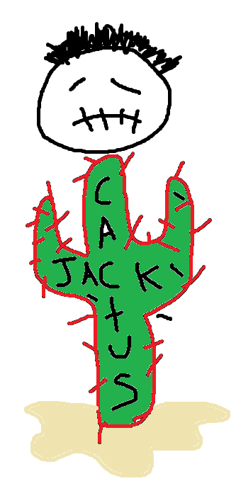

Un nuevo estudio concluye que más de la mitad de las especies podrían enfrentarse un mayor riesgo de extinción a mediados de siglo, ya que el aumento del calor y la sequedad ponen a prueba los límites de estas espinosas plantas. Ya lo estamos viendo también con los insectos. Estudios recientes han expuesto que el número de insectos del planeta está disminuyendo drásticamente tanto en población como en diversidad debido a la expansión de la agricultura y al cambio climático a partes iguales. En algunas áreas, las poblaciones generales de insectos se han reducido casi a la mitad. Ahora, un equipo de investigadores de la Universidad de Arizona (EE. UU.) se planteó la hipótesis de que, dado que los cactus se adaptan bien a las condiciones secas y cálidas, podrían prosperar en los climas cada vez más cálidos que experimentan algunas regiones debido a la crisis climática.
Los investigadores consideraron tres escenarios diferentes de calentamiento global y sus posibles consecuencias a un total de 408 especies de cactus. ¿Les iría bien? Descubrieron que los efectos del cambio climático también podrían significar un mayor riesgo de extinción para el 60% de todas las especies de cactus para mediados de siglo. Además, al contrario que la creencia popular de que el aumento de las temperaturas beneficiaría a las especies de cactus, alrededor del 90% de ellas se verán afectadas negativamente por el cambio climático. “La mayoría de las especies de cactus están de alguna manera adaptadas a los climas y entornos en los que viven”, explica Michiel Pillet, estudiante de doctorado en ecología y biología evolutiva de la Universidad de Arizona y coautor del estudio que ha sido publicado en la revista Nature Plants.
Fundacion CACTUS ÑACK
Gracias por Visitar! Hugo Lopez Capilla ALL RIGHTS RESERVED